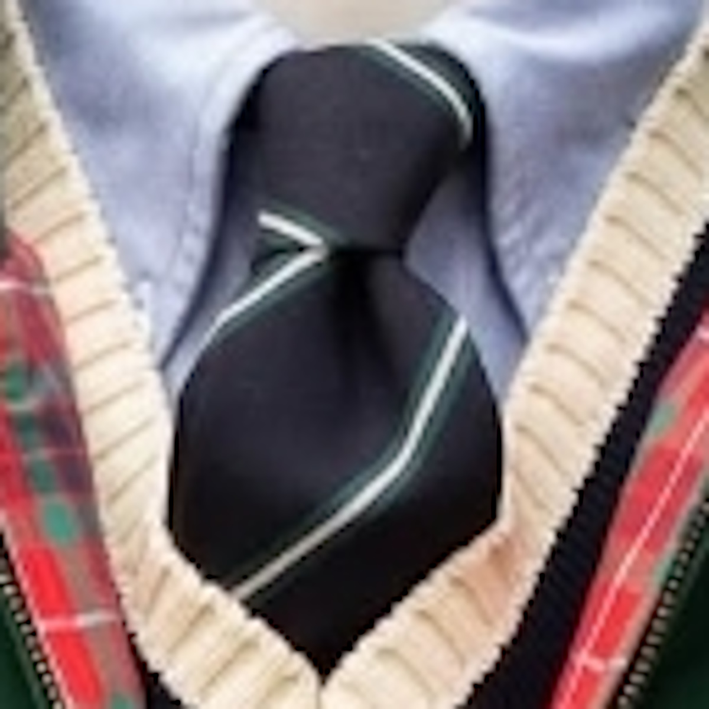
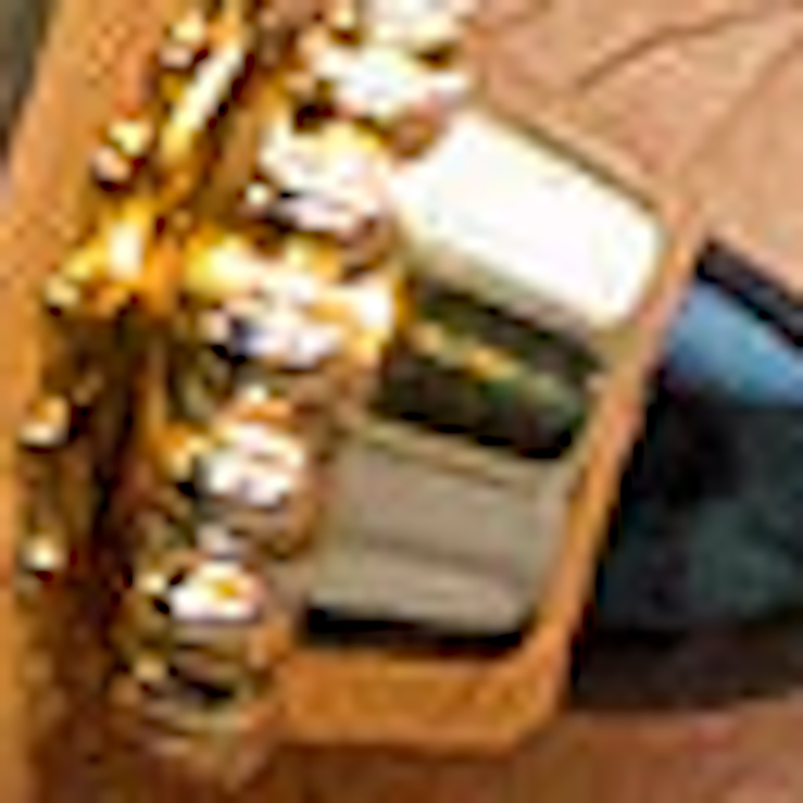
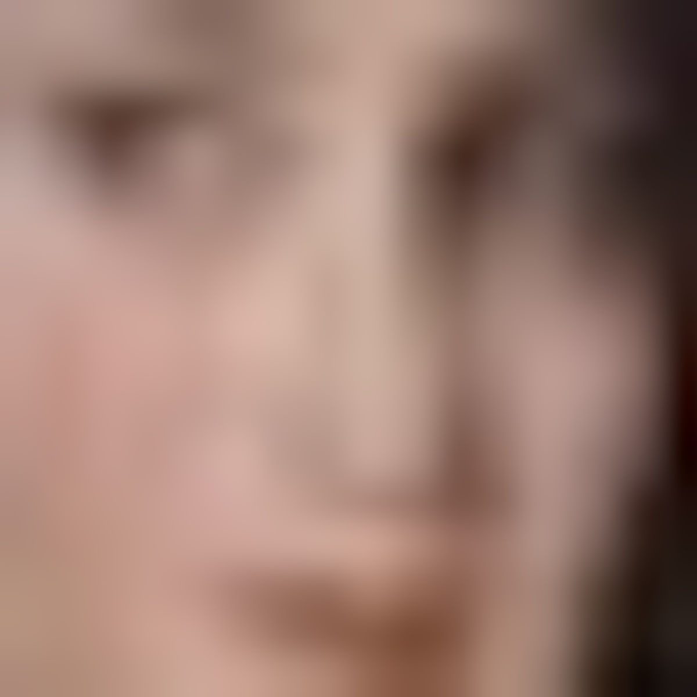
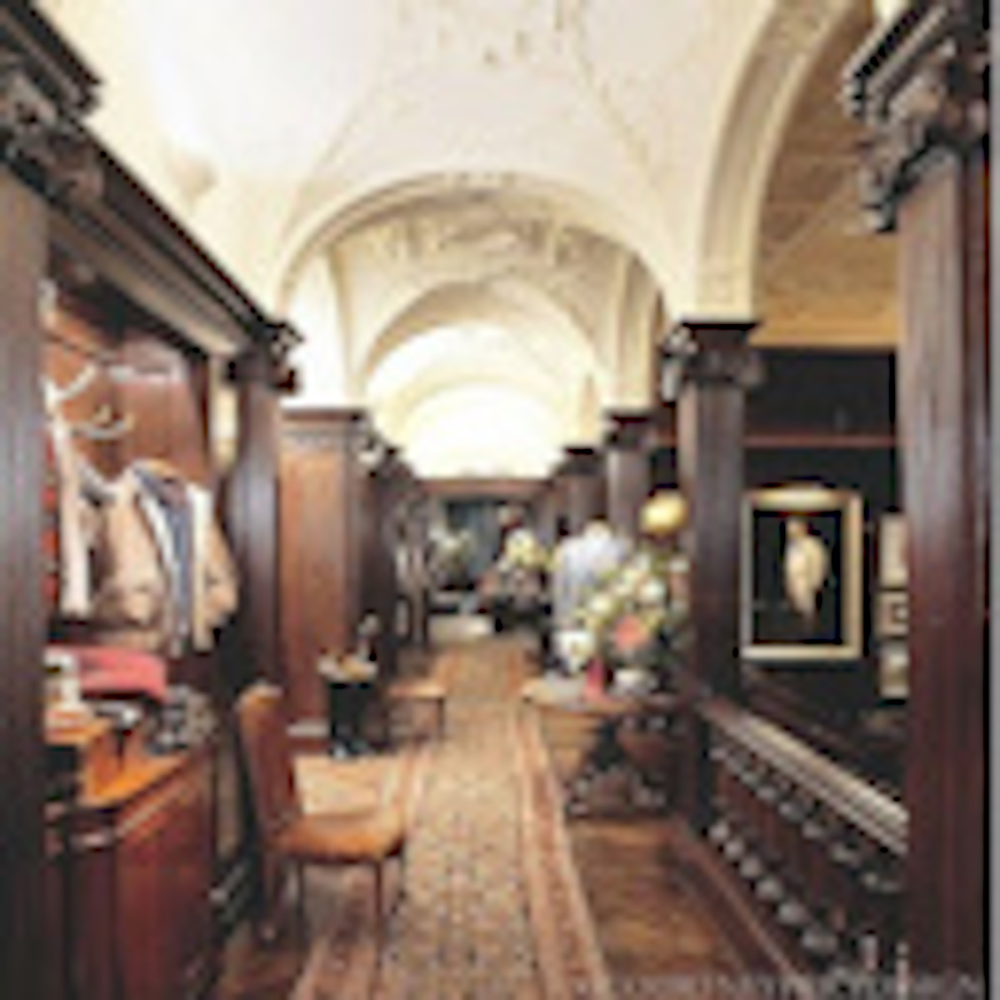
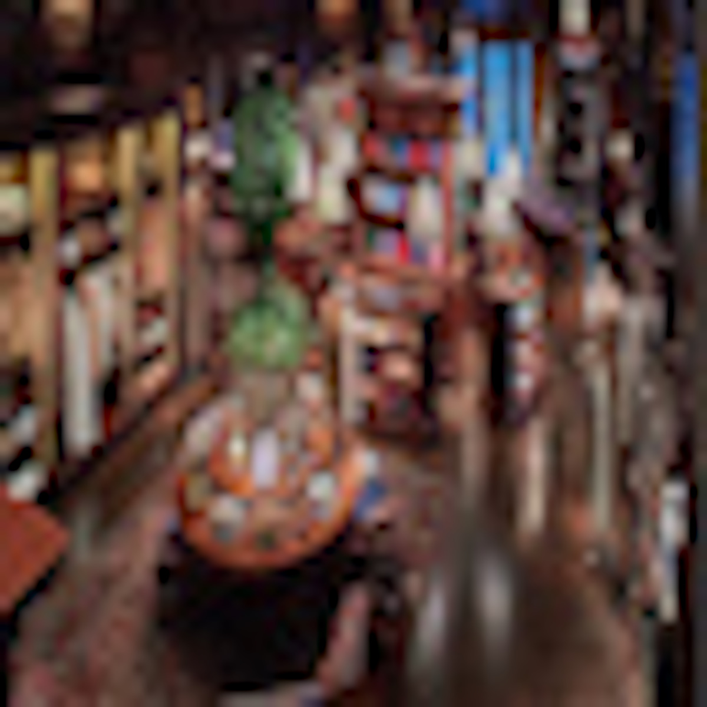
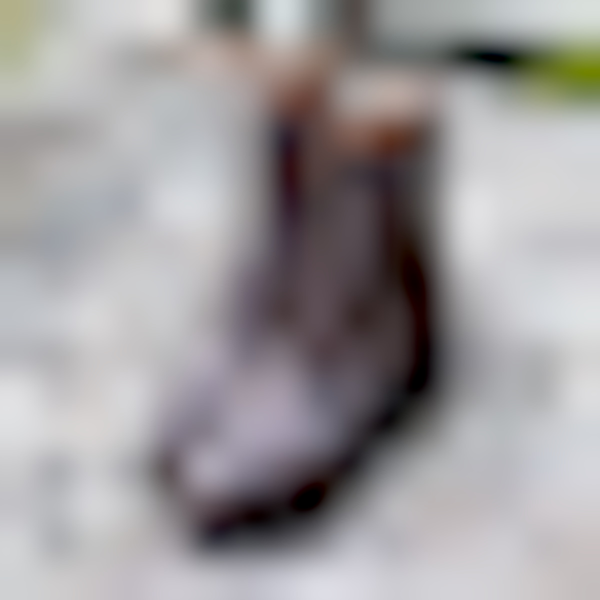

<!DOCTYPE html>
<html lang="en">
    <head>
        <meta charset="UTF-8" />
        <title>Title</title>
    </head>
    <body style="background-color: #275506"></body>
</html>

<html lang="en">
<head>
  <meta charset="UTF-8">
  <meta name="viewport" content="width=device-width, initial-scale=1.0">
  <title>My Portfolio</title>
  <style>
    body {
      font-family: Arial, sans-serif;
      margin: 0;
      line-height: 1.6;
    }
    header {
      background: #275506;
      color: darkgoldenrod;
      padding: 1rem;
      text-align: center;
    }
    nav {
      background: #8d6925;
      
    }
    nav ul {
      list-style: none;
      margin: 0;
      padding: 0;
      display: flex;
      flex-wrap: wrap;
      justify-content: center;
    }
    nav ul li {
      margin: 0.5rem;
    }
    nav ul li a {
      color: #47f214;
      text-decoration: none;
      padding: 0.5rem 1rem;
      background: #5c560f;
      border-radius: 4px;
      transition: background 0.3s;
    }
    nav ul li a:hover {
      background: #b2a60b;
    }
    main {
      padding: 2rem;
    }
    section {
      margin-bottom: 2rem;
    }
    footer {
      background: #275506;
      color: darkgoldenrod;
      text-align: center;
      padding: 1rem;
    }
  </style>
</head>
<body>
  <header>
    <h1 style="font-family: serif">Joshua's Portfolio</h1>
    <p style="font-family: serif;font-size: x-large">ART2602C Introduction to Digital Studio Online / Fall 2025</p>
  </header>

  <nav>
    <ul style="font-family: serif">
      <li><a href="final%20portfolio%20home.html">Home Page</a></li>
      <li><a href="final%20portfolio%20bad%20photoshop.html">Bad Photoshop</a></li>
      <li><a href="final%20portfolio%20perfect%20mask.html">Perfect Mask</a></li>
      <li><a href="final%20portfolio%20gifs.html">Animated GIFs</a></li>
      <li><a href="final%20portfolio%20glitch%20grit.html">Glitch and Grit</a></li>
    </ul>
  </nav>

  <main style="background-color: rgb(227, 215, 192)">
    <section id="pixelated">
      <h2 style="text-align: center; color: darkgoldenrod;font-family: serif">Pixelated</h2>
      <p style="color: darkgoldenrod; font-size: x-large;font-family: serif;text-align: center">The Pixelated assignment I was given
      was to simply make pixel art resourced from images online. The art was to be divided into 2 types:
        extracted and resized. Extracted images simply dealt with extracting small details  from large images. 
        Resized images were those large images, but resized into something significantly compressed.
      Because of the nature of small details and decreasing size in digital imagery, the images end up becoming
      pixelated as intended with the project, hence the name.</p>
      <h2 style="text-align: center; color: darkgoldenrod;font-family: serif">Extracted Images</h2>   
      
      
      
      
      <h2 style="text-align: center; color: darkgoldenrod;font-family: serif">Resized Images</h2>
      
      
      
      
       <h2 style="text-align: center; color: darkgoldenrod;font-family: serif">Technical Notes</h2>
      <p style="color: darkgoldenrod; font-size: x-large;font-family: serif;text-align: center">
        Adobe Photoshop was used to scale the imagery. Images obtained from Google.</p>
       <h2 style="text-align: center; color: darkgoldenrod;font-family: serif">Process Documentation</h2>
      <p style="color: darkgoldenrod; font-size: x-large;font-family: serif;text-align: center">
        A lot of menswear stores were scoured
        to find nice details for the scaled imagery. Primarily, most of the images are from Ralph Lauren flagship
        stores (which are super nice and I believe at least everyone should see/visit them once). I thought those
      stores were perfect due to the amount of details they had as well. Other than flagship store displays, I also
      looked at particular products I was fond of such as eyewear, timepieces, and footwear.</p>
       <h2 style="text-align: center; color: darkgoldenrod;font-family: serif">Reflection</h2>
      <p style="color: darkgoldenrod; font-size: x-large;font-family: serif;text-align: center">
        The nature of the project was jarring
      to me, as I often found pixelated imagery to be ugly and just poor quality photos. 
        There was honestly quite a mental block actually working on these imagery because I genuinely thought they
      all looked horrible. Though, maybe I suppose that's the charm of such imagery? Anyhow, 
        I found the process rather simple to do anyways. Just find cool looking small details in imagery and find
      photos that can be still be recognized even if compressed. There wasn't anything inherently learned  at least
      in a technical sense, but I suppose that it was sort of training to keep our eyes keen for details in imagery.
      I'd say that it helped that I'm a really big fan of men's harberdasery displays. There's so much stuff to
      unpack and so many details to the point where it was like picking a favorite piece of candy in gift box. "Oooh,
        those neckties would look recognizeable pixelated," or 
        "Man, I really love this mannequin display they did."</p>
    </section>

    

  </main>

  <footer>
    <p>&copy; 2025 Joshua's Portfolio</p>
  </footer>
</body>
</html>
